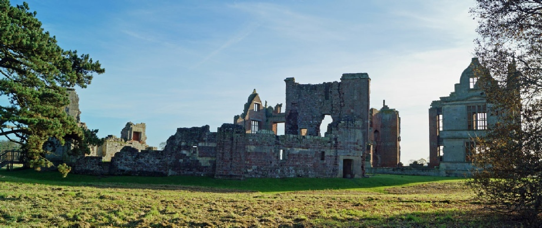
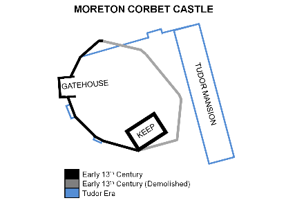
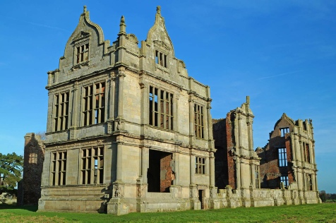

MORETON CORBET CASTLE, SY4 4DW
GETTING THERE
Postcode: SY4 4DW
Lat/Long: 52.8042N, 2.6522W
Notes: Limited but sufficient road signs to the castle. There is a small lay-by suitable for several cars directly outside the gate to the castleâs grounds.
WHAT IS THERE TO SEE?
The ruins of a fortified manor house with the remains dating from several periods. The Tudor remains are particularly fine with fine decorative stonework to be admired. No access is possible to the upper storeys of either the ruined house or fortifications.
VISIT OFFICIAL SITE (Opens in new window)
Managed by English Heritage .
ADDITIONAL NOTES
1. Moreton Corbet was known as Moreton Toret during the period the manor was owned by that family (sometime after 1086 through to 1239).
2. The tomb of Sir Richard Corbet (grandfather of Robert) can be seen at the nearby parish church of St. Bartholomew.
Moreton Corbet Castle Layout . The original thirteenth century castle was a small enclosure with a single gatehouse. The eastern curtain wall was demolished when the Tudor Mansion was built.
Originally built by Anglo-Saxons who has survived the dispossessions of the Norman invasion, Moreton Corbet Castle acquired its name from a later owner. Besieged by William Marshall, on behalf of King John, it was spectacularly rebuilt as a luxurious house in the sixteenth century but was attacked multiple times during the Civil War.
HISTORY OF MORETON CORBET CASTLE
The site of Moreton Corbet is recorded in the Domesday Book (1086) as being held by Thorold of Verley from Roger of Montgomery - the Norman magnate charged with controlling the central Welsh March. Thorold was seemingly an Anglo-Saxon magnate who had survived the dispossessions that followed the Norman invasion. He granted the land to two of his supporters - the brothers Hunning and Wulfgeat. Sometime after 1086 it passed to the Toret family who again were of Anglo-Saxon descent. It was either Thorold or the Torets who first fortified the site - probably no later than 1100 - by building an earth and timber structure with additional protection by a ditch. These wooden defences were rebuilt circa-1200 in stone with the Gatehouse, Great Tower and curtain wall being added at this time.
In 1216 the then owner, Bartholomew Toret, quarrelled with King John who dispatched William Marshal, Earl of Pembroke to seize Moreton. Bartholomew was imprisoned but the King's timely death in late 1216 (at Newark Castle ) saw him restored. When Bartholomew himself died in 1239 without a male heir, the castle passed by marriage into the hands of Richard Corbet of Wattlesborough who gave the castle its full name; it has remained in the hands of the Corbet family until this day.
The Medieval castle remained little changed until the sixteenth century when Robert Corbet inherited it in 1578. A prominent diplomat in the service of Queen Elizabeth I, he sought to convert the structure into a suitable home for someone of his status. He built an extensive new range adjacent to, but outside of, the original line of the curtain wall of the castle. He preserved the Gatehouse (as the main access) and Great Tower (re-rolled as a storehouse) both of which became features of his new house. An extensive garden was laid out and the medieval ditches were partially filled in. Unfortunately Robert did not live long to enjoy his new estate - he died of plague in 1583 and some of the modifications were carried after his death by his brothers Richard and Vincent.
Aside from Bartholomew Toret's quarrel with King John, Moreton Corbet Castle had a peaceful existence upto until the seventeenth century. This changed when the Civil War erupted and the castle found itself as part of the outer Royalist defences for Shrewsbury. Moreton Corbet changed hands several times during the conflict before finally falling to Parliament as the defences around Shrewsbury collapsed.
After the Civil War the castle was restored to the Corbet family and repairs made. The castle was certainly still inhabited by 1700 but it was later allowed to fall into ruin and was abandoned as a home.
© Copyright 2016 | Terms and Conditions (inc Cookie Policy) | Contact Us
Recovered original photographs, plans and images



